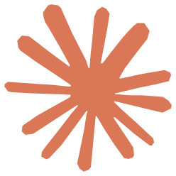

OpenViking ·
网关是什么
gateway.openviking.
volcengine.com
守在通往
模型的路上

memories/events
resources
release-plan.md
review-1028.md
pilot-scope.md
checklist.md
runbook.md
deploy.md
内
研发助手
自研 Agent
客
客服 Bot
工作流
运
运维 Bot
工作流
上次定的发布日期…
新服务怎么部署？
gateway.openviking.volcengine.com
OpenViking 网关
召回
存回
工具
模型
Anthropic · OpenAI · DeepSeek · 方舟
你原来的模型